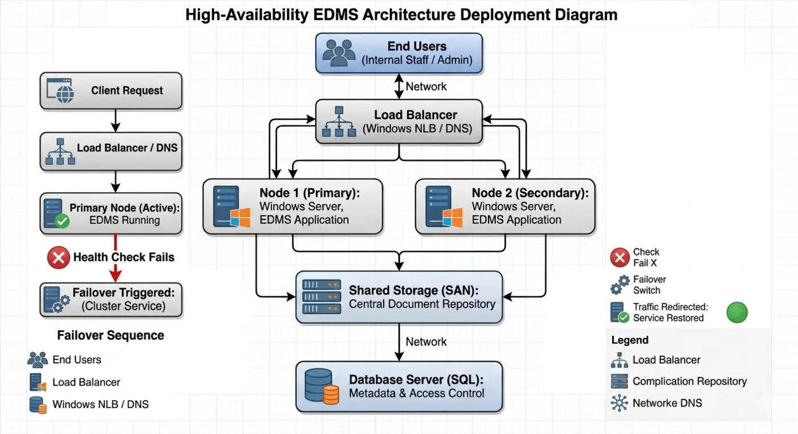

Security & DR
Failover & Endpoint Detection
Disaster recovery architecture and centralized endpoint security monitoring.
Problem
Lack of centralized security monitoring.
Solution
Built a monitoring system for endpoint logs and threats.
Architecture

Impact
- Improved security visibility
Lessons learned
- Security monitoring is critical